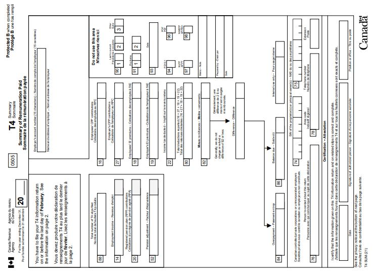

T4 summary - Information for employers
On this page
What is a T4 summary
The T4 summary (T4SUM) represents the total of the information reported on all of the T4 slips you prepared for each employee for the calendar year.
Information reported on the T4 summary includes the totals for all employment income, CPP contributions, EI premiums, and income tax deducted, for all employees.
You can get a Form T4SUM in a PDF or PDF fillable/saveable format to file on paper.
Sample
{kind=link}
What to report
- Report all amounts in Canadian dollars, even if they were paid in another currency. Learn more about the average exchange rates: Exchange rates
- Fill out a separate T4 summary for each of your payroll accounts. The totals you report on your T4 summary have to agree with the totals of all amounts you reported on your T4 slips for that payroll account
- If you do not have any amounts to report on a T4 slip or summary, there is no need to send the CRA either form
- Do not change your address using the T4 summary. Learn more about making changes: Make changes to your account
How to fill out
Year
Enter the last 2 digits of the calendar year for which you are preparing the T4 summary.
Employer's account number
Enter your 15-character payroll account number (for example, 123456789RP0001).
Name and address of employer
Enter your legal name, your operating or trading name (if it differs from your legal name), and address.
Line 88 – Total number of T4 slips filed
Enter the total number of T4 slips that you are filing with the T4 summary.
Line 14 – Employment income
Add the amounts in box 14 of all T4 slips. Report the total on line 14.
Line 20 – Registered pension plan (RPP) contributions
Add the amounts in box 20 of all T4 slips. Report the total on line 20.
Line 52 – Pension adjustment
Add the amounts in box 52 of all T4 slips. Report the total on line 52.
Line 16 – Employee's CPP contributions
Add the amounts in box 16 of all T4 slips. Report the total on line 16.
Boxes 16A – Employee's second CPP contributions (CPP2) Slips filed for calendar year 2024 and after
For T4 summaries filed for calendar year 2024 and after, add the amounts in box 16A of all T4 slips. Report the total on line 16A.
If required, the CRA may need to update the instructions during 2023.
Line 27 – Employer's CPP contributions
Report your share of CPP contributions on line 27.
Boxes 27A – Employer's second CPP contributions (CPP2) Slips filed for calendar year 2024 and after
For T4 summaries filed for calendar year 2024 and after, report your share of CPP2 contributions on line 27A.
If required, the CRA may need to update the instructions during 2023.
Line 18 – Employee's EI premiums
Add the amounts in box 18 of all T4 slips. Report the total on line 18.
Line 19 – Employer's EI premiums
Report your share of EI premiums (multiply the employees' total premiums by the employer's premium rate) on line 19.
Line 22 – Income tax deducted
Add the amounts in box 22 of all T4 slips. Report the total on line 22.
Line 80 – Total deductions reported
Add the amounts reported on lines 16, 27, 18, 19, and 22 of the T4 summary. Report the total on line 80.
Line 82 – Remittances
Report the total amount of payroll deductions and contributions you remitted to the CRA for your payroll account. You can get this amount from your most recent PD7A.
Learn more: Receiving payroll correspondence from us
Difference
Subtract line 82 from line 80. Report the difference in the space provided.
If:
- the amount is negative, there is an overpayment. Report the result on line 84.
- the amount is positive, there is a balance due. Report the result on line 86.
- there is no difference between the total deductions you reported and the amount you remitted for the year, leave lines 84 and 86 blank.
Generally, the CRA does not charge or refund a difference of $2 or less.
Line 84 – Overpayment
If the amount on line 82 is more than the amount on line 80 (and you do not have to file another type of return for this payroll account), report the difference on line 84.
Attach or send a note providing the reason for the overpayment and whether you want the CRA to transfer this amount to another account, another year, or refund the overpayment to you.
Line 86 – Balance due
If the amount on line 80 is more than the amount on line 82, report the difference on line 86.
Lines 74 and 75 – Canadian-controlled private corporations or unincorporated employers
Enter the social insurance numbers of any proprietors or principal owners.
Lines 76 and 78 – Person to contact about this return
Enter the name and telephone number of a contact person that the CRA can call to get or clarify information you reported on the T4 summary.
Certification
An authorized person must sign and date the T4 summary.